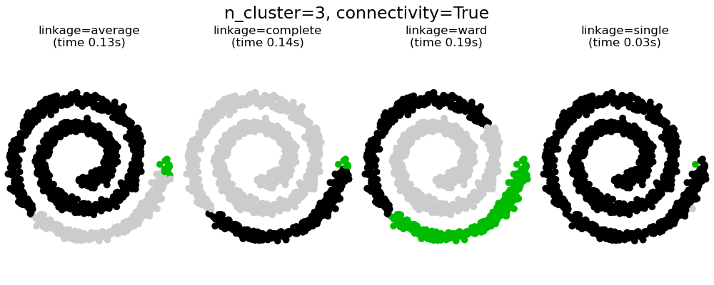
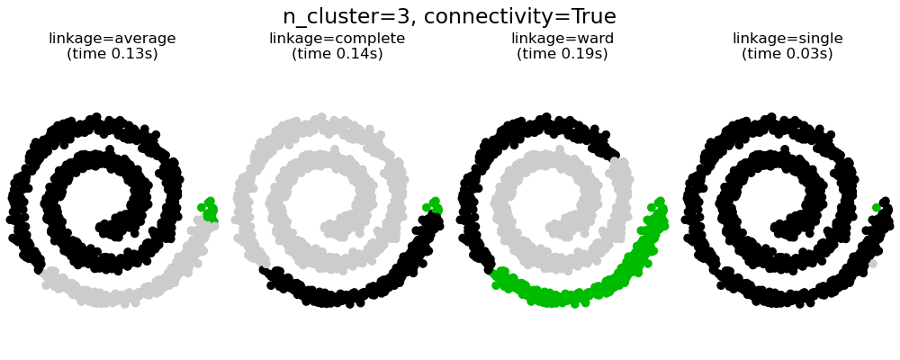

2.3. Análisis de conglomerados (Agrupamiento)¶
El análisis de conglomerados de datos no etiquetados puede realizarse con el módulo sklearn.cluster.
Cada algoritmo de análisis de conglomerados viene en dos variantes: una clase, que implementa el método fit para aprender los conglomerados en los datos de entrenamiento, y una función, que, dados los datos de entrenamiento, devuelve un arreglo de etiquetas de enteros correspondientes a los diferentes conglomerados. Para la clase, las etiquetas sobre los datos de entrenamiento se pueden encontrar en el atributo labels_.
Datos de entrada
Una cosa importante a tener en cuenta es que los algoritmos implementados en este módulo pueden tomar diferentes tipos de matriz como entrada. Todos los métodos aceptan matrices de datos estándar con la forma (n_samples, n_features). Estos pueden obtenerse de las clases en el módulo sklearn. módulo eature_extraction. Para AffinityPropagation, SpectralClustering y DBSCAN también se pueden introducir matrices de similitud de la forma (n_samples, n_muestras). Estos se pueden obtener de las funciones en el módulo sklearn.metrics.pairwise.
2.3.1. Resumen de los métodos de análisis de conglomerados¶

Una comparación de los algoritmos de análisis de conglomerados en scikit-learn¶
Nombre del método |
Parámetros |
Escalabilidad |
Casos de uso |
Geometría (métrica utilizada) |
|---|---|---|---|---|
número de conglomerados |
|
Uso general, tamaño uniforme de los conglomerados, geometría plana, no demasiados conglomerados |
Distancias entre puntos |
|
amortiguación, preferencia de muestra |
No escalable con |
Muchos conglomerados, tamaño desigual de los conglomerados, geometría no plana |
Distancia gráfica (por ejemplo, el gráfico vecino más cercano) |
|
bandwidth |
No escalable con |
Muchos conglomerados, tamaño desigual de los conglomerados, geometría no plana |
Distancias entre puntos |
|
número de conglomerados |
|
Pocos conglomerados, tamaño uniforme de los conglomerados, geometría no plana |
Distancia gráfica (por ejemplo, el gráfico vecino más cercano) |
|
número de conglomerados o umbral de distancia |
|
Muchos conglomerados, posiblemente con limitaciones de conectividad |
Distancias entre puntos |
|
número de conglomerados o umbral de distancia, tipo de vinculación, distancia |
|
Muchos conglomerados, posibles restricciones de conectividad, distancias no euclidianas |
Cualquier distancia entre pares |
|
tamaño del vecindario |
|
Geometría no plana, tamaños desiguales de los conglomerados |
Distancias entre los puntos más cercanos |
|
número mínimo de miembros del conglomerado |
|
Geometría no plana, tamaños desiguales de los conglomerados, densidad variable de los conglomerados |
Distancias entre puntos |
|
muchos |
No escalable |
Geometría plana, buena para la estimación de la densidad |
Distancias de Mahalanobis para los centros |
|
factor de ramificación, umbral, agrupador global opcional. |
|
Conjunto de datos grande, eliminación de valores atípicos, reducción de datos. |
Distancia euclidiana entre puntos |
El análisis de conglomerados de geometría no plana es útil cuando los conglomerados tienen una forma específica, es decir, una variedad no plana, y la distancia euclidiana estándar no es la métrica adecuada. Este caso se da en las dos filas superiores de la figura anterior.
Los modelos de mezclas Gaussianas, útiles para el análisis de conglomerados, se describen en otro capítulo de la documentación dedicado a modelos de mezclas. KMedias puede ser visto como un caso especial del modelo de mezcla Gaussiana con igual covarianza por componente.
2.3.2. K-medias¶
El algoritmo KMeans agrupa los datos tratando de separar muestras en n grupos de igual varianza, minimizando un criterio conocido como la inercia o la suma de cuadrados dentro del conglomerado (ver abajo). Este algoritmo requiere que se especifique el número de conglomerados. Se ajusta bien a un gran número de muestras y se ha utilizado en una una gran variedad de áreas de aplicación en muchos campos diferentes.
El algoritmo k-medias divide un conjunto \(N\) de \(X\) muestras en \(K\) conglomerados disjuntos \(C\), cada uno descrito por la media \(mu_j\) de las muestras en el conglomerado. Los medias se denominan comúnmente los «centroides» del conglomerado; nótese que no son, en general, puntos de \(X\), aunque viven en el mismo espacio.
El algoritmo K-medias tiene como objetivo elegir los centroides que minimicen la inercia, o el criterio de la suma de cuadrados dentro del conglomerado:
La inercia puede reconocerse como una medida de la coherencia interna de los conglomerados. Sufre varios inconvenientes:
La inercia supone que los conglomerados son convexos e isotrópicos, lo que no siempre es el caso. Responde mal a los conglomerados alargados o a las variedades con formas irregulares.
La inercia no es una métrica normalizada: sólo sabemos que los valores más bajos son mejores y cero es óptimo. Pero en espacios de muy alta dimensión, las distancias Euclidianas tienden a inflarse (este es un ejemplo de la llamada «maldición de la dimensión»). Ejecutar un algoritmo de reducción de dimensionalidad como Análisis de componentes principales (PCA) antes de un análisis de conglomerados mediante k-medias puede minimizar este problema y acelerar los cálculos.
K-medias se conoce a menudo como el algoritmo de Lloyd. En términos básicos, el algoritmo tiene tres pasos. El primer paso elige los centroides iniciales, siendo el método más básico elegir \(k\) muestras del conjunto de datos \(X\). Después de la inicialización, K-medias consiste en un bucle entre los otros dos pasos. El primer paso asigna cada muestra a su centroide más cercano. El segundo paso crea nuevos centroides tomando el valor medio de todas las muestras asignadas a cada centroide anterior. Se calcula la diferencia entre los centroides antiguos y los nuevos y el algoritmo repite estos dos últimos pasos hasta que este valor sea menor que un umbral. En otras palabras, se repite hasta que los centroides no se muevan de forma significativa.

K-medias es equivalente al algoritmo de maximización de la esperanza con una matriz de covarianzas pequeña, toda igual y diagonal.
El algoritmo también puede entenderse a través del concepto de Voronoi diagrams <https://en.wikipedia.org/wiki/Voronoi_diagram>`_. En primer lugar, se calcula el diagrama de Voronoi de los puntos utilizando los centroides actuales. Cada segmento del diagrama de Voronoi se convierte en un conglomerado separado. En segundo lugar, los centroides se actualizan a la media de cada segmento. El algoritmo repite esto hasta que se cumpla un criterio de parada. Normalmente, el algoritmo se detiene cuando la disminución relativa de la función objetiva entre iteraciones es menor que el valor de tolerancia dado. Este no es el caso en esta implementación: la iteración se detiene cuando los centroides se mueven por debajo de la tolerancia.
Con suficiente tiempo, K-medias siempre convergerá sin embargo, esto puede ser a un mínimo local. Esto depende en gran medida de la inicialización de los centroides. Como resultado, el cálculo se realiza a menudo varias veces, con diferentes inicializaciones de los centroides. Un método que ayuda a resolver este problema es el esquema de inicialización de k-medias++, que se ha implementado en scikit-learn (utilice el parámetro init='k-means++'). Esto inicializa los centroides para que sean (generalmente) distantes entre sí, conduciendo a resultados probadamente mejores que la inicialización aleatoria, como se muestra en la referencia.
K-medias++ también puede ser llamado independientemente para seleccionar semillas para otros algoritmos de análisis de conglomerados ver sklearn.cluster.kmeans_plus para detalles y ejemplos de uso.
El algoritmo admite pesos de las muestras, que pueden ser dados por un parámetro sample_weight. Esto permite asignar más peso a algunas muestras cuando se calculan los centros de los conglomerados y los valores de inercia. Por ejemplo, asignar un peso de 2 a una muestra equivale a añadir un duplicado de esa muestra al conjunto de datos \(X\).
K-medias puede utilizarse para la cuantificación de vectores. Esto se consigue utilizando el método de transformación de un modelo entrenado de KMeans.
2.3.2.1. Paralelismo de bajo nivel¶
KMeans se beneficia del paralelismo basado en OpenMP a través de Cython. Pequeñas porciones de datos (256 muestras) se procesan en paralelo, lo que, además, supone un bajo consumo de memoria. Para más detalles sobre cómo controlar el número de hilos, por favor consulta nuestras notas de Paralelismo.
Ejemplos:
Demostración de los supuestos de k-medias: Demostración de cuándo k-medias funciona intuitivamente y cuándo no
Demostración (demo) del agrupamiento por K-Medias en los datos de dígitos escritos a mano: Análisis de conglomerados de dígitos manuscritos
Referencias:
«k-means++: The advantages of careful seeding» Arthur, David, and Sergei Vassilvitskii, Proceedings of the eighteenth annual ACM-SIAM symposium on Discrete algorithms, Society for Industrial and Applied Mathematics (2007)
2.3.2.2. K-medias de mini lotes¶
El MiniBatchKMeans es una variante del algoritmo KMeans que usa mini lotes para reducir el tiempo de cálculo, mientras se intenta optimizar la misma función objetivo. Los mini lotes son subconjuntos de los datos de entrada, muestreados aleatoriamente en cada iteración de entrenamiento. Estos mini lotes reducen drásticamente la cantidad de cálculo necesaria para converger a una solución local. En contraste con otros algoritmos que reducen el tiempo de convergencia de k-medias, k-medias en mini lotes produce resultados que generalmente son ligeramente peores que el algoritmo estándar.
El algoritmo itera entre dos pasos principales, similares a las k-medias vanilla. En el primer paso, las \(b\) muestras se extraen aleatoriamente del conjunto de datos, para formar un mini lote. Estos se asignan al centroide más cercano. En el segundo paso, se actualizan los centroides. En contraste con las k-medias, esto se hace sobre una base por muestra. Para cada muestra en el mini lote, el centroide asignado se actualiza tomando la media de transmisión de la muestra y todas las muestras anteriores asignadas a ese centroide. Esto tiene el efecto de disminuir la tasa de cambio de un centroide en el tiempo. Estos pasos se realizan hasta que se alcanza la convergencia o un número predeterminado de iteraciones.
MiniBatchKMeans converge más rápido que KMeans, pero la calidad de los resultados se reduce. En la práctica, esta diferencia de calidad puede ser bastante pequeña, como se muestra en el ejemplo y referencia citada.

Ejemplos:
Comparación de los algoritmos de agrupamiento K-Means (K-Medias) y MiniBatchKMeans: Comparación de las KMedias y K-Medias de mini lotes
Análisis de conglomerados en documentos de texto utilizando k-medias(k-means): Análisis de conglomerados de documentos utilizando K-medias de mini lotes dispersos
Referencias:
«Web Scale K-Means clustering» D. Sculley, Proceedings of the 19th international conference on World wide web (2010)
2.3.3. Propagación de la afinidad¶
AffinityPropagation crea conglomerados enviando mensajes entre pares de muestras hasta la convergencia. A continuación, se describe un conjunto de datos utilizando un pequeño número de ejemplares, que se identifican como los más representativos de otras muestras. Los mensajes enviados entre pares representan la idoneidad de una muestra para ser el ejemplar de la otra, que se actualiza en respuesta a los valores de otros pares. Esta actualización ocurre iterativamente hasta la convergencia, momento en el que se eligen los ejemplos finales, y por lo tanto se da el análisis de conglomerados final.
La Propagación de la Afinidad puede ser interesante ya que elige el número de conglomerados basado en los datos proporcionados. Para este propósito, los dos parámetros importantes son la preferencia, que controla cuántos ejemplares se utilizan, y el factor de amortiguación que reduce la responsabilidad y la disponibilidad de los mensajes para evitar oscilaciones numéricas al actualizar estos mensajes.
El principal inconveniente de la Propagación de la Afinidad es su complejidad. El algoritmo tiene una complejidad temporal del orden \(O(N^2 T)\), donde \(N\) es el número de muestras y \(T\) es el número de iteraciones hasta la convergencia. Además, la complejidad de la memoria es del orden \(O(N^2)\) si se utiliza una matriz de similitud densa, pero reducible si se utiliza una matriz de similitud dispersa. Esto hace que la Propagación de la Afinidad sea la más apropiada para los conjuntos de datos de tamaño pequeño o mediano.
Ejemplos:
Demostración (demo) del algoritmo de agrupamiento por propagación de afinidad: Propagación de la Afinidad en un conjunto de datos sintéticos 2D con 3 clases.
Visualización de la estructura bursátil Propagación de afinidad en series temporales financieras para encontrar grupos de empresas
Descripción del algoritmo: Los mensajes enviados entre puntos pertenecen a una de las dos categorías. La primera es la responsabilidad \(r(i, k)\), que es la evidencia acumulada de que la muestra \(k\) debe ser el ejemplar para la muestra \(i\). La segunda es la disponibilidad \(a(i, k)\) que es la evidencia acumulada de que la muestra \(i\) debe elegir la muestra \(k\) para ser su ejemplar, y considera los valores para todas las demás muestras que \(k\) debe ser un ejemplar. De este modo, los ejemplares son elegidos por las muestras si son (1) lo suficientemente similares a muchas muestras y (2) elegidos por muchas muestras para ser representativos de sí mismos.
Más formalmente, la responsabilidad de una muestra \(k\) de ser el ejemplar de la muestra \(i\) viene dada por:
Donde \(s(i, k)\) es la similitud entre las muestras \(i\) y \(k\). La disponibilidad de la muestra \(k\) para ser el ejemplar de la muestra \(i\) viene dada por:
Para empezar, todos los valores de \(r\) y \(a\) se establecen en cero, y el cálculo de cada uno itera hasta la convergencia. Como se ha comentado anteriormente, para evitar las oscilaciones numéricas al actualizar los mensajes, se introduce el factor de amortiguación \(\lambda\) en el proceso de iteración:
donde \(t\) indica los tiempos de iteración.
2.3.4. Media desplazada¶
El análisis de conglomerados por MeanShift tiene como objetivo descubrir manchas en una densidad suave de muestras. Se trata de un algoritmo basado en el centroide, que funciona actualizando los candidatos a centroides para que sean la media de los puntos dentro de una región determinada. Estos candidatos se filtran en una etapa de post-procesamiento para eliminar los duplicados cercanos y formar el conjunto final de centroides.
Dado un centroide candidato \(x_i\) para la iteración \(t\), el candidato se actualiza según la siguiente ecuación:
Donde \(N(x_i)\) es el vecindario de muestras dentro de una distancia determinada alrededor de \(x_i\) y \(m\) es el vector de medias desplazadas que se calcula para cada centroide que apunta hacia una región de máximo aumento de la densidad de puntos. Esto se calcula utilizando la siguiente ecuación, actualizando efectivamente un centroide para que sea la media de las muestras dentro de su vecindario:
El algoritmo establece automáticamente el número de conglomerados, en lugar de depender de un parámetro bandwidth, que dicta el tamaño de la región a buscar. Este parámetro se puede definir manualmente, pero se puede estimar usando la función proporcionada estimate_bandwidth, que se llama si el bandwidth no está establecido.
El algoritmo no es altamente escalable, ya que requiere múltiples búsquedas del vecino más cercano durante la ejecución del algoritmo. El algoritmo está garantizado para converger, sin embargo, el algoritmo dejará de iterar cuando el cambio en los centroides sea pequeño.
El etiquetado de una nueva muestra se realiza buscando el centroide más cercano para una muestra determinada.
Ejemplos:
Una demostración (demo) del algoritmo de agrupamiento por media desplazada: El análisis de conglomerados por media desplazada en un conjunto de datos 2D sintéticos con 3 clases.
Referencias:
«Mean shift: A robust approach toward feature space analysis.» D. Comaniciu and P. Meer, IEEE Transactions on Pattern Analysis and Machine Intelligence (2002)
2.3.5. Análisis espectral de conglomerados¶
SpectralClustering realiza una incrustación (embedding) de baja dimensión de la matriz de afinidad entre las muestras, seguida del agrupamiento, por ejemplo, mediante KMedias, de los componentes de los autovectores en el espacio de baja dimensión. Es especialmente eficiente desde el punto de vista computacional si la matriz de afinidad es dispersa y se utiliza el solucionador amg para el problema de autovalores (Nota, el solucionador amg requiere que el módulo pyamg esté instalado.)
La versión actual de SpectralClustering requiere que se especifique de antemano el número de conglomerados. Funciona bien para un número pequeño de conglomerados, pero no se aconseja para muchos conglomerados.
Para dos conglomerados, SpectralClustering resuelve una relajación convexa del problema de los cortes normalizados en el grafo de similitud: cortar el grafo en dos para que el peso de las aristas cortadas sea pequeño comparado con los pesos de las aristas dentro de cada conglomerado. Este criterio es especialmente interesante cuando se trabaja con imágenes, en las que los vértices del grafo son píxeles, y los pesos de las aristas del grafo de similitud se calculan utilizando una función del gradiente de la imagen.
Advertencia
Transformación de la distancia en similitudes bien avenidas
Ten en cuenta que si los valores de tu matriz de similitud no están bien distribuidos, por ejemplo, con valores negativos o con una matriz de distancias en lugar de similitud, el problema espectral será singular y el problema no se podrá resolver. En ese caso, se aconseja aplicar una transformación a las entradas de la matriz. Por ejemplo, en el caso de una matriz de distancias es común aplicar un kernel de calor:
similarity = np.exp(-beta * distance / distance.std())
Vea los ejemplos para una aplicación de este tipo.
Ejemplos:
Agrupamiento espectral para la segmentación de imágenes: Segmentación de objetos de un contexto ruidoso utilizando análisis espectral de conglomerados.
Segmentación de la imagen de las monedas griegas en regiones: Análisis Espectral de Conglomerados para dividir la imagen de las monedas en regiones.
2.3.5.1. Diferentes estrategias de asignación de etiquetas¶
Se pueden utilizar diferentes estrategias de asignación de etiquetas, correspondientes al parámetro assign_labels de SpectralClustering. La estrategia "kmeans" puede coincidir con detalles más precisos, pero puede ser inestable. En particular, a menos que controle el random_state, puede no ser reproducible de una ejecución a otra, ya que depende de una inicialización aleatoria. La estrategia alternativa "discretize" es 100% reproducible, pero tiende a crear parcelas de forma bastante uniforme y geométrica.
|
|
|---|---|
2.3.5.2. Grafos de Análisis Espectral de conglomerados¶
El Análisis Espectral de Conglomerados también puede utilizarse para dividir los grafos a través de sus incrustaciones espectrales. En este caso, la matriz de afinidad es la matriz de adyacencia del grafo, y SpectralClustering se inicializa con affinity='precomputed':
>>> from sklearn.cluster import SpectralClustering
>>> sc = SpectralClustering(3, affinity='precomputed', n_init=100,
... assign_labels='discretize')
>>> sc.fit_predict(adjacency_matrix)
Referencias:
«A Tutorial on Spectral Clustering» Ulrike von Luxburg, 2007
«Normalized cuts and image segmentation» Jianbo Shi, Jitendra Malik, 2000
«A Random Walks View of Spectral Segmentation» Marina Meila, Jianbo Shi, 2001
«On Spectral Clustering: Analysis and an algorithm» Andrew Y. Ng, Michael I. Jordan, Yair Weiss, 2001
«Preconditioned Spectral Clustering for Stochastic Block Partition Streaming Graph Challenge» David Zhuzhunashvili, Andrew Knyazev
2.3.6. Análisis de conglomerados jerárquicos¶
El análisis de conglomerados jerárquicos es una familia general de los algoritmos de agrupamiento que construyen conglomerados anidados fusionándolos o dividiéndolos sucesivamente. Esta jerarquía de conglomerados se representa como un árbol (o dendrograma). La raíz del árbol es el conglomerado único que reúne todas las muestras, siendo las hojas los conglomerados con una sola muestra. Véase la página de la Wikipedia para más detalles.
El objeto AgglomerativeClustering realiza un análisis de conglomerados jerárquicos utilizando un enfoque ascendente: cada observación comienza en su propio conglomerado y los conglomerados se fusionan sucesivamente. El criterio de enlace determina la métrica utilizada para la estrategia de fusión:
Ward minimiza la suma de las diferencias al cuadrado dentro de todos los conglomerados. Se trata de un enfoque de minimización de la varianza y, en este sentido, es similar a la función objetivo de k-medias pero abordada con un enfoque jerárquico aglomerativo.
Máximo o enlazamiento completo minimiza la distancia máxima entre las observaciones de pares de conglomerados.
Enlazamiento promedio minimiza el promedio de las distancias entre todas las observaciones de pares de conglomerados.
El enlazamiento simple minimiza la distancia entre las observaciones más cercanas de los pares de conglomerados.
AglomerativeClustering también puede escalar a un gran número de muestras cuando se utiliza conjuntamente con una matriz de conectividad, pero es computacionalmente costoso cuando no se añaden restricciones de conectividad entre las muestras: considera en cada paso todas las fusiones posibles.
FeatureAgglomeration utiliza el agrupamiento aglomerativo para agrupar características muy similares, disminuyendo así el número de características. Es una herramienta de reducción de la dimensionalidad, ver Reducción de dimensionalidad no supervisada.
2.3.6.1. Diferentes tipos de enlazamientos: Ward, completo, promedio y enlazamiento simple¶
AgglomerativeClustering admite las estrategias de enlazamientos Ward, simple, promedio, y completos.

El conglomerado aglomerativo tiene un comportamiento de «los ricos se hacen más ricos» que conduce a tamaños de conglomerado desiguales. En este sentido, el enlazamiento simple es la peor estrategia, y Ward da los tamaños más regulares. Sin embargo, la afinidad (o distancia utilizada en la conglomeración) no puede variarse con Ward, por lo que para las métricas no Euclidianas, el enlazamiento promedio es una buena alternativa. El enlazamiento simple, aunque no es robusto frente a los datos ruidosos, puede calcularse de forma muy eficiente y, por tanto, puede ser útil para proporcionar un análisis de conglomerados jerárquicos de conjuntos de datos más grandes. El enlazamiento simple también puede funcionar bien con datos no globulares.
Ejemplos:
Diferentes agrupamientos aglomerativos en una incrustación 2D de dígitos: exploración de las diferentes estrategias de enlazamientos en un conjunto de datos real.
2.3.6.2. Visualización de la jerarquía de conglomerados¶
Es posible visualizar el árbol que representa la fusión jerárquica de conglomerados como un dendrograma. La inspección visual a menudo puede ser a menudo útil para comprender la estructura de los datos, aunque más en el caso de tamaños de muestra pequeños.
2.3.6.3. Añadir restricciones de conectividad¶
Un aspecto interesante de AgglomerativeClustering es que a este algoritmo se le pueden añadir restricciones de conectividad (sólo se pueden fusionar conglomerados adyacentes), a través de una matriz de conectividad que define para cada muestra las muestras vecinas siguiendo una estructura determinada de los datos. Por ejemplo, en el ejemplo de brazo de gitano que aparece a continuación, las restricciones de conectividad prohíben la fusión de puntos que no sean adyacentes en el brazo gitano, y evitar así la formación de conglomerados que se extiendan a través de partes o pliegues superpuestos del rollo.
Estas restricciones son útiles para imponer una cierta estructura local, pero también hacen que el algoritmo sea más rápido, especialmente cuando el número de muestras es alto.
Las restricciones de conectividad se imponen a través de una matriz de conectividad: una matriz dispersa de scipy que tiene elementos sólo en la intersección de una fila y una columna con índices del conjunto de datos que deben ser conectados. Esta matriz puede construirse a partir de la información a priori: por ejemplo, puedes querer conglomerar páginas web mediante la fusión de páginas con un enlace que apunte de una a otra. También se puede aprender de los datos, por ejemplo usando sklearn.neighbors.kneighbors_graph para restringir la fusión a los vecinos más cercanos como en este ejemplo, o utilizando sklearn. eature_extraction.image.grid_to_graph para permitir sólo la fusión de píxeles vecinos en una imagen, como en el ejemplo de la moneda.
Ejemplos:
Una demostración (demo) del agrupamiento jerárquico de Ward estructurado en una imagen de monedas: Análisis de conglomerados Ward para dividir la imagen de las monedas en regiones.
Agrupamiento jerárquico: sala estructurada o no estructurada: Ejemplo del algoritmo Ward en un brazo de gitano, comparación de enfoques estructurados frente a enfoques no estructurados.
Agrupamiento de características vs. selección univariante: Ejemplo de reducción de la dimensionalidad con aglomeración de características basado en el análisis de conglomerados jerárquicos de Ward.
Advertencia
Restricciones de conectividad con enlazamiento simple, promedio y completo
Las restricciones de conectividad y el enlazamiento simple, completo o promedio pueden mejorar el aspecto del análisis de conglomerados aglomerativos «ricos cada vez más ricos». particularmente si se construyen con sklearn. eighbors.kneighbors_graph. En el límite de un pequeño número de conglomerados, tienden a dar unos pocos conglomerados ocupados macroscópicamente y unos casi vacíos. (vea la discusión en Agrupamiento aglomerativo con y sin estructura). El enlazamiento simple es la opción de enlazamiento más frágil con respecto a este problema.
 

2.3.6.4. Variación de la métrica¶
Los enlazamientos simple, promedio y completo pueden utilizarse con una variedad de distancias (o afinidades), en particular la distancia Euclidiana (l2), la distancia Manhattan (o Cityblock, o l1), la distancia coseno, o cualquier matriz de afinidad precalculada.
La distancia l1 suele ser buena para las características dispersas, o para el ruido disperso: es decir, muchas de las características son cero, como en la minería de texto que utiliza las ocurrencias de palabras raras.
La distancia del coseno es interesante porque es invariante a las escalas globales de la señal.
La pauta para elegir una métrica es utilizar una que maximice la distancia entre las muestras las distintas clases y minimice la distancia dentro de cada clase.
2.3.7. DBSCAN¶
El algoritmo DBSCAN considera los conglomerados como áreas de alta densidad separadas por áreas de baja densidad. Debido a esta visión bastante genérica, los conglomerados encontrados por DBSCAN pueden tener cualquier forma, a diferencia de k-medias, que asume que los conglomerados tienen forma convexa. El componente central del DBSCAN es el concepto de muestras principales, que son muestras que se encuentran en zonas de alta densidad. Un conglomerado es, por tanto, un conjunto de muestras principales, cada una de ellas cercana a la otra (medida por alguna distancia) y un conjunto de muestras no principales que están cerca de una muestra principal (pero que no son ellas mismas muestras principales). El algoritmo tiene dos parámetros, min_samples y eps, que definen formalmente lo que queremos decir cuando hablamos de densidad. Un min_samples más alto o un eps más bajo indican una mayor densidad necesaria para formar un conglomerado.
Más formalmente, definimos una muestra principal como una muestra en el conjunto de datos de forma tal que existen min_samples otras muestras dentro de una distancia de eps, que se definen como vecinos de la muestra principal. Esto nos dice que la muestra principal se encuentra en un área densa del espacio vectorial. Un conglomerado es un conjunto de muestras principales que puede construirse tomando recursivamente una muestra principal, encontrando a todos sus vecinos que son muestras principales, y así sucesivamente. Un conglomerado también tiene un conjunto de muestras no principales, que son muestras vecinas de una muestra principal en el conglomerado pero no son en sí mismas muestras principales. Intuitivamente, estas muestras están en los márgenes de un conglomerado.
Cualquier muestra principal forma parte de un conglomerado, por definición. Cualquier muestra que no es una muestra principal, y que esté al menos eps de distancia de cualquier muestra principal, es considerado un valor atípico por el algoritmo.
Mientras que el parámetro min_samples controla principalmente la tolerancia del algoritmo al ruido (en conjuntos de datos ruidosos y grandes puede ser deseable aumentar este parámetro), el parámetro eps es crucial para elegir adecuadamente para el conjunto de datos y la función de distancia y normalmente no puede dejarse en el valor por defecto. Controla el vecindario local de los puntos. Cuando se elige demasiado pequeño, la mayoría de los datos no serán conglomerados en absoluto (y serán etiquetados como -1 para el «ruido»). Cuando se elige demasiado grande, hace que los conglomerados cercanos se fusionen en un conglomerado, y finalmente, todo el conjunto de datos será devuelto como un solo conglomerado. Algunas heurísticas para elegir este parámetro han sido discutidas en la literatura, por ejemplo, basándose en una curvatura en el gráfico de distancias del vecino más cercano (como se discute en las referencias más abajo).
En la figura de abajo, el color indica la pertenencia a un conglomerado, los círculos grandes indican las muestras principales encontradas por el algoritmo. Los círculos más pequeños son muestras no principales que siguen formando parte del conglomerado. Además, los valores atípicos se indican con puntos negros abajo.
Implementación
El algoritmo DBSCAN es determinístico, siempre genera los mismos conglomerados cuando se le dan los mismos datos en el mismo orden. Sin embargo, los resultados pueden diferir cuando los datos se proporcionan en un orden diferente. En primer lugar, aunque las muestras principales siempre serán asignadas a los mismos conglomerados, las etiquetas de esos conglomerados dependerán del orden en que se encuentren esas muestras en los datos. En segundo lugar y más importante, los conglomerados a los que se asignan muestras no principales pueden diferir dependiendo del orden de los datos. Esto ocurriría cuando una muestra no principal tiene una distancia inferior a eps a dos muestras principales en conglomerados diferentes. Por la desigualdad triangular, esas dos muestras principales deben estar a una distancia mayor que eps entre sí, o estarían en el mismo conglomerado. La muestra no principal se asigna al conglomerado que se genere primero en una pasada a través de los datos, y por lo tanto los resultados dependerán del orden de los datos.
La implementación actual utiliza árboles de bolas y árbol kd para determinar el vecindario de los puntos, que evita calcular la matriz a distancia completa (como se hacía en las versiones de scikit-learn anteriores a la 0.14). Se mantiene la posibilidad de utilizar métricas personalizadas; para más detalles, véase NearestNeighbors.
Memory consumption for large sample sizes
Por defecto, esta implementación no es eficiente en cuanto a memoria porque construye una matriz de similitud por pares completa en el caso de que no se puedan utilizar los árboles kd o los árboles de bolas (por ejemplo, con matrices dispersas). Esta matriz consumirá \(n^2\) floats (números de punto flotante). Un par de mecanismos para evitar esto son:
Utilice el análisis de conglomerados OPTICS junto con el método
extract_dbscan. El análisis de conglomerados OPTICS también calcula la matriz completa por pares, pero sólo mantiene una fila en memoria a la vez (complejidad de memoria n).Un grafo de vecindad de radio disperso (donde se presumen entradas faltantes para estar fuera de eps) puede precalcularse de una manera eficiente en cuanto a memoria y dbscan puede funcionar sobre esto con
metric='precomputed'. Veasklearn.neighbors.NearestNeighbors.radius_neighbors_graph.El conjunto de datos se puede comprimir, ya sea eliminando los duplicados exactos si aparecen en los datos, o utilizando BIRCH. De este modo, sólo tendrá un número relativamente pequeño de representantes para un gran número de puntos. A continuación, puede proporcionar un
sample_weightal ajustar DBSCAN.
Referencias:
«A Density-Based Algorithm for Discovering Clglomerados in Large Spatial Databases with Noise» Ester, M., H. P. Kriegel, J. Sander, and X. Xu, In Proceedings of the 2nd International Conference on Knowledge Discovery and Data Mining, Portland, OR, AAAI Press, páginas 226-231. 1996
«DBSCAN revisited, revisited: why and how you should (still) use DBSCAN. Schubert, E., Sander, J., Ester, M., Kriegel, H. P., & Xu, X. (2017). In ACM Transactions on Database Systems (TODS), 42(3), 19.
2.3.8. OPTICS¶
El algoritmo OPTICS comparte muchas similitudes con el algoritmo DBSCAN, y puede considerarse una generalización de DBSCAN que relaja el requerimiento de eps de un valor único a un rango de valores. La diferencia clave entre DBSCAN y OPTICS es que el algoritmo OPTICS construye un grafo de accesibilidad, que asigna a cada muestra tanto una distancia reachability_, como un punto dentro del atributo ordering_ del conglomerado ; estos dos atributos se asignan cuando se ajusta el modelo, y se utilizan para determinar la pertenencia a un conglomerado. Si OPTICS se ejecuta con el valor predeterminado de inf establecido para max_eps, entonces la extracción de conglomerados al estilo DBSCAN puede realizarse repetidamente en tiempo lineal para cualquier valor dado de eps utilizando el método cluster_optics_dbscan. Establecer max_eps a un valor más bajo resultará en tiempos de ejecución más cortos, y puede ser considerado como el radio máximo de vecindad de cada punto para encontrar otros puntos potenciales alcanzables.
Las distancias de accesibilidad generadas por OPTICS permiten la extracción de densidad variable de los conglomerados dentro de un mismo conjunto de datos. Como se muestra en la gráfica anterior, la combinación de distancias de accesibilidad y el ordering_ del conjunto de datos produce un gráfico de accesibilidad, en el que la densidad de los puntos se representa en el eje Y, y los puntos se ordenan de tal manera que los puntos cercanos sean adyacentes. Al “cortar” el gráfico de accesibilidad en un solo valor produce resultados similares a los de DBSCAN; todos los puntos por encima del “corte” se clasifican como ruido, y cada vez que hay una interrupción al leer de izquierda a derecha significa un nuevo conglomerado. La extracción de conglomerados por defecto con OPTICS mira las pendientes pronunciadas dentro del grafo para encontrar conglomerados, y el usuario puede definir lo que cuenta como una pendiente pronunciada usando el parámetro xi. También existen otras posibilidades de análisis sobre el propio grafo, como generar representaciones jerárquicas de los datos a través de dendrogramas de accesibilidad, y se puede acceder a la jerarquía de conglomerados detectada por el algoritmo a través del parámetro cluster_hierarchy_. El gráfico anterior ha sido codificado por colores de modo que los colores de los conglomerados en el espacio plano coinciden con los conglomerados de segmentos lineales del gráfico de accesibilidad. Tenga en cuenta que los conglomerados azules y rojos están adyacentes en el gráfico de accesibilidad, y pueden representarse jerárquicamente como hijos de un conglomerado padre más grande.
Comparación con DBSCAN
Los resultados del método OPTICS cluster_optics_dbscan y de DBSCAN son muy similares, pero no siempre idénticos; específicamente, el etiquetado de los puntos de periferia y de ruido. Esto se debe, en parte, a que las primeras muestras de cada área densa procesada por OPTICS tienen un gran valor de accesibilidad estando cerca de otros puntos en su área, y por lo tanto, a veces se marcarán como ruido, en lugar de periferia. Esto afecta a los puntos adyacentes cuando se consideran candidatos para ser marcados como periferia o ruido.
Tenga en cuenta que para cualquier valor único de eps, DBSCAN tenderá a tener un tiempo de ejecución más corto que OPTICS; sin embargo, para ejecuciones repetidas con valores variantes de eps, una sola ejecución de OPTICS puede requerir menos tiempo de ejecución acumulado que DBSCAN. También es importante tener en cuenta que la salida de OPTICS se acerca a la de DBSCAN, sólo si eps y max_eps están cerca.
Complejidad computacional
Los árboles de indexación espacial se utilizan para evitar el cálculo de la matriz de distancias completa, y permiten un uso eficiente de la memoria en grandes conjuntos de muestras. Diferentes métricas de distancia pueden ser suministradas a través de la palabra clave metric.
Para grandes conjuntos de datos, se pueden obtener resultados similares (pero no idénticos) mediante HDBSCAN. La implementación de HDBSCAN es multihilo, y tiene una mejor complejidad algorítmica en tiempo de ejecución que OPTICS, a costa de un peor escalado de memoria. Para los conjuntos de datos extremadamente grandes que agotan la memoria del sistema utilizando HDBSCAN, OPTICS mantendrá el escalado de memoria \(n\) (en lugar de \(n^2\)) ; sin embargo, es probable que sea necesario ajustar el parámetro max_eps para obtener una solución en una cantidad razonable de tiempo real.
Referencias:
«OPTICS: ordering points to identify the clustering structure.» Ankerst, Mihael, Markus M. Breunig, Hans-Peter Kriegel, and Jörg Sander. In ACM Sigmod Record, vol. 28, no. 2, pp. 49-60. ACM, 1999.
2.3.9. Birch¶
El Birch construye un árbol llamado el Árbol de Características de Conglomerados (CFT) para los datos dados. Los datos se comprimen esencialmente con pérdidas en un conjunto de nodos de característica de conglomeración (Nodos CF). Los Nodos CF tienen un número de subconglomerados llamados «Subconglomerados de Características de Conglomeración (Subconglomerados CF) y estos subconglomerados CF ubicados en los Nodos CF no terminales pueden tener Nodos CF como hijos.
Los Subconglomerados CF contienen la información necesaria para el análisis de conglomerados, lo que evita la necesidad de mantener todos los datos de entrada en la memoria. Esta información incluye:
Número de muestras en un subconglomerado.
Suma lineal - Un vector n-dimensional que contiene la suma de todas las muestras
Suma cuadrado - Suma de la norma L2 al cuadrado de todas las muestras.
Centroides - Para evitar recálculos de suma lineal / n_muestras.
Norma al cuadrado de los centroides.
El algoritmo Birch tiene dos parámetros, el umbral y el factor de ramificación. El factor de ramificación limita el número de subconglomerados en un nodo y el umbral limita la distancia entre la muestra que entra y los subconglomerados existentes.
Este algoritmo puede considerarse como una instancia o un método de reducción de datos, ya que reduce los datos de entrada a un conjunto de subconglomerados que se obtienen directamente de las hojas del CFT. Estos datos reducidos pueden ser procesados posteriormente alimentando un agrupador global. Este agrupador global puede establecerse mediante n_clusters. Si n_clusters se establece como None, los subconglomerados de las hojas se leen directamente, de lo contrario en un paso del análisis de conglomerados globales etiqueta estos subconglomerados globales (etiquetas) y las muestras se asignan a la etiqueta global del subconglomerado más cercano.
Descripción del algoritmo:
Una nueva muestra se inserta en la raíz del árbol CF que es un nodo CF. Luego se fusiona con el subconglomerado de la raíz, que tenga el radio más pequeño después de la fusión, restringido por el umbral y las condiciones del factor de ramificación. Si el subconglomerado tiene algún nodo hijo, entonces se repite la operación hasta que alcanza una hoja. Después de encontrar el subconglomerado más cercano en la hoja, las propiedades de este subconglomerado y los subconglomerados padre se actualizan recursivamente.
Si el radio del subconglomerado obtenido al fuisionar la nueva muestra y el subconglomerado más cercano es mayor que el cuadrado del umbral y si el número de subconglomerados es mayor que el factor de ramificación, entonces se asigna temporalmente un espacio a esta nueva muestra. Se toman los dos subconglomerados más alejados y se dividen los subconglomerados en dos grupos en función de la distancia entre estos subconglomerados.
Si este nodo dividido tiene un subconglomerado padre y hay espacio para un nuevo subconglomerado, entonces el padre se divide en dos. Si no hay espacio, entonces este nodo se divide de nuevo en dos y el proceso se continúa recursivamente, hasta que llega a la raíz.
¿Birch o MiniBatchKMeans?
Birch no se adapta muy bien a los datos de alta dimensión. Como regla general, si
n_featureses mayor que veinte, suele ser mejor utilizar MiniBatchKMeans.Si es necesario reducir el número de instancias de datos, o si se desea un gran número de subconglomerados, ya sea como paso previo al procesamiento o de otro modo, Birch es más útil que MiniBatchKMeans.
¿Cómo utilizar partial_fit?
Para evitar el cálculo del agrupamiento global, para cada llamado de partial_fit se aconseja al usuario
Para establecer
n_clusters=NoneinicialmenteEntrena todos los datos mediante múltiples llamados a partial_fit.
Establezca
n_clustersa un valor requerido usandobrc.set_params(n_clusters=n_clusters).Llama finalmente a
partial_fitsin argumentos, es decir,brc.partial_fit()que realiza el agrupamiento global.
Referencias:
Tian Zhang, Raghu Ramakrishnan, Maron Livny BIRCH: An efficient data clustering method for large databases. https://www.cs.sfu.ca/CourseCentral/459/han/papers/zhang96.pdf
Roberto Perdisci JBirch - Java implementation of BIRCH clustering algorithm https://code.google.com/archive/p/jbirch
2.3.10. Evaluación del rendimiento del análisis de conglomerados (agrupamiento)¶
Evaluar el rendimiento de un algoritmo de análisis de conglomerados no es tan trivial como contar el número de errores o la precisión y exhaustividad de un algoritmo de clasificación supervisada. En particular, cualquier métrica de evaluación no debería tener en cuenta los valores absolutos de las etiquetas de los conglomerados, sino más bien si este agrupamiento define separaciones de los datos similares a algún conjunto de clases de la verdad básica o satisface alguna suposición como que los miembros que pertenecen a la misma clase son más similares que los miembros de clases diferentes según alguna métrica de similitud.
2.3.10.1. Índice de Rand¶
Dado el conocimiento de las asignaciones de clase de la verdad sobre el terreno labels_true y las asignaciones de nuestro algoritmo de agrupación de las mismas muestras labels_pred, el índice de Rand (ajustado o no ajustado) es una función que mide la similitud de las dos asignaciones, ignorando las permutaciones:
>>> from sklearn import metrics
>>> labels_true = [0, 0, 0, 1, 1, 1]
>>> labels_pred = [0, 0, 1, 1, 2, 2]
>>> metrics.rand_score(labels_true, labels_pred)
0.66...
El índice de Rand no garantiza obtener un valor cercano a 0.0 para un etiquetado aleatorio. El índice de Rand ajustado corrige por casualidad y dará esa línea de base.
>>> metrics.adjusted_rand_score(labels_true, labels_pred)
0.24...
Como con todas las métricas del análisis de conglomerados, se puede permutar 0 y 1 en las etiquetas predichas, renombrar 2 a 3 y obtener la misma puntuación:
>>> labels_pred = [1, 1, 0, 0, 3, 3]
>>> metrics.rand_score(labels_true, labels_pred)
0.66...
>>> metrics.adjusted_rand_score(labels_true, labels_pred)
0.24...
Además, rand_score y adjusted_rand_score son simétricos: intercambiar el argumento no cambia las puntuaciones. Por tanto, pueden utilizarse como medidas de consenso:
>>> metrics.rand_score(labels_pred, labels_true)
0.66...
>>> metrics.adjusted_rand_score(labels_pred, labels_true)
0.24...
El etiquetado perfecto tiene una puntuación de 1,0:
>>> labels_pred = labels_true[:]
>>> metrics.rand_score(labels_true, labels_pred)
1.0
>>> metrics.adjusted_rand_score(labels_true, labels_pred)
1.0
Las etiquetas con poca concordancia (por ejemplo, etiquetas independientes) tienen puntuaciones más bajas, y para el índice de Rand ajustado la puntuación será negativa o cercana a cero. Sin embargo, para el índice de Rand no ajustado la puntuación, aunque sea más baja, no será necesariamente cercana a cero.:
>>> labels_true = [0, 0, 0, 0, 0, 0, 1, 1]
>>> labels_pred = [0, 1, 2, 3, 4, 5, 5, 6]
>>> metrics.rand_score(labels_true, labels_pred)
0.39...
>>> metrics.adjusted_rand_score(labels_true, labels_pred)
-0.07...
2.3.10.1.1. Ventajas¶
Interpretabilidad: El índice de Rand no ajustado es proporcional al número de pares de muestras cuyas etiquetas son iguales tanto en
labels_predcomo enlabels_true, o son diferentes en ambas.Las asignaciones de etiquetas aleatorias (uniformes) tienen una puntuación del índice de Rand ajustado cercana a 0,0 para cualquier valor de
n_clustersyn_muestras(lo que no ocurre con el índice de Rand no ajustado o la medida V, por ejemplo).Rango limitado: Los valores más bajos indican diferentes etiquetados, las agrupaciones similares tienen un índice de Rand alto (ajustado o no ajustado), 1,0 es la puntuación de coincidencia perfecta. El rango de puntuación es [0, 1] para el índice de Rand no ajustado y [-1, 1] para el índice de Rand ajustado.
No se hace ninguna suposición sobre la estructura del conglomerado: El índice de Rand (ajustado o no ajustado) puede utilizarse para comparar todos los tipos de algoritmos de análisis de conglomerados, y puede utilizarse para comparar algoritmos de agrupamiento tales como k-medias que asume formas de manchas isotrópicas con resultados de algoritmos de agrupamiento espectral que pueden encontrar conglomerados con formas «plegadas».
2.3.10.1.2. Inconvenientes¶
Al contrario de lo que ocurre con la inercia, el índice de Rand (ajustado o sin ajustar) requiere el conocimiento de las clases verdaderas, que casi nunca están disponibles en la práctica o requieren la asignación manual por parte de anotadores humanos (como en el entorno del aprendizaje supervisado).
Sin embargo, el índice de Rand (ajustado o no ajustado) también puede ser útil en un entorno puramente no supervisado como bloque de construcción para un Índice de Consenso que puede ser utilizado para la selección de modelos de análisis de conglomerados (TODO).
El índice de Rand no ajustado suele ser cercano a 1,0 incluso si los conglomerados difieren significativamente. Esto se puede entender cuando se interpreta el índice de Rand como la exactitud del etiquetado de los pares de elementos resultantes de los agrupamientos: En la práctica, a menudo hay una mayoría de pares de elementos a los que se le asigna la etiqueta
differenttanto en el conglomerado predicho como en el agrupamiento verdadero sobre el terreno, lo que da lugar a una alta proporción de etiquetas de par que coinciden, lo que conduce posteriormente a una alta puntuación.
Ejemplos:
Ajuste al azar en la evaluación del rendimiento del agrupamiento: Análisis del impacto del tamaño del conjunto de datos en el valor de las medidas del agrupamiento para las asignaciones aleatorias.
2.3.10.1.3. Formulación matemática¶
Si C es una asignación de la clase basada en la evidencia y K el agrupamiento, definamos \(a\) y \(b\) como:
\(a\), el número de pares de elementos que están en el mismo conjunto en C y en el mismo conjunto en K
\(b\), el número de pares de elementos que están en conjuntos diferentes en C y en conjuntos diferentes en K
El índice de Rand no ajustado viene dado entonces por:
donde \(C_2^{n_{samples}}\) es el número total de pares posibles en el conjunto de datos. No importa si el cálculo se realiza sobre pares ordenados o pares no ordenados siempre y cuando el cálculo se realice de forma coherente.
Sin embargo, el índice de Rand no garantiza que las asignaciones aleatorias de etiquetas obtengan un valor cercano a cero (especialmente si el número de conglomerado es del mismo orden de magnitud que el número de muestras).
Para contrarrestar este efecto podemos descontar el RI esperado \(E[\text{RI}]\) de las etiquetas aleatorias definiendo el índice de Rand ajustado de la siguiente manera:
Referencias
Comparing Partitions L. Hubert and P. Arabie, Journal of Classification 1985
Properties of the Hubert-Arabie adjusted Rand index D. Steinley, Psychological Methods 2004
2.3.10.2. Puntuaciones basadas en información mutua¶
Dado el conocimiento de las asignaciones de clase basadas en la evidencia labels_true y nuestras asignaciones del algoritmo de agrupación de las mismas muestras labels_pred, la Información Mutua es una función que mide el acuerdo de las dos asignaciones, ignorando las permutaciones. Dos versiones normalizadas de esta medida están disponibles, la Información Mutua Normalizada (Normalized Mutual Information, NMI) y la Información Mutua Ajustada (Adjusted Mutual Information, AMI). La NMI se utiliza a menudo en la literatura, mientras que la AMI fue propuesto más recientemente y se normaliza contra el azar:
>>> from sklearn import metrics
>>> labels_true = [0, 0, 0, 1, 1, 1]
>>> labels_pred = [0, 0, 1, 1, 2, 2]
>>> metrics.adjusted_mutual_info_score(labels_true, labels_pred)
0.22504...
Se puede permutar el 0 y 1 en las etiquetas predichas, renombrar el 2 al 3 y obtener la misma puntuación:
>>> labels_pred = [1, 1, 0, 0, 3, 3]
>>> metrics.adjusted_mutual_info_score(labels_true, labels_pred)
0.22504...
Todas, mutual_info_score, adjusted_mutual_info_score y normalized_mutual_info_score son simétricos: intercambiar el argumento no cambia la puntuación. Por lo tanto, pueden utilizarse como una medida de consenso:
>>> metrics.adjusted_mutual_info_score(labels_pred, labels_true)
0.22504...
El etiquetado perfecto tiene una puntuación de 1,0:
>>> labels_pred = labels_true[:]
>>> metrics.adjusted_mutual_info_score(labels_true, labels_pred)
1.0
>>> metrics.normalized_mutual_info_score(labels_true, labels_pred)
1.0
Esto no es cierto para mutual_info_score, que por lo tanto es más difícil de juzgar:
>>> metrics.mutual_info_score(labels_true, labels_pred)
0.69...
Los malos (por ejemplo, los etiquetados independientes) tienen puntuaciones no positivas:
>>> labels_true = [0, 1, 2, 0, 3, 4, 5, 1]
>>> labels_pred = [1, 1, 0, 0, 2, 2, 2, 2]
>>> metrics.adjusted_mutual_info_score(labels_true, labels_pred)
-0.10526...
2.3.10.2.1. Ventajas¶
Las asignaciones de etiquetas aleatorias (uniformes) tienen una puntuación AMI cercana a 0,0 para cualquier valor de
n_clustersyn_samples(lo que no ocurre con la Información Mutua bruta o la medida V, por ejemplo).Límite superior de 1: Los valores cercanos a cero indican dos asignaciones de etiquetas que son en gran medida independientes, mientras que los valores cercanos a uno indican un acuerdo significativo. Además, una AMI de exactamente 1 indica que las dos asignaciones de etiquetas son iguales (con o sin permutación).
2.3.10.2.2. Inconvenientes¶
Al contrario de lo que ocurre con la inercia, las medidas basadas en el IM requieren el conocimiento de las clases verdaderas, mientras que casi nunca están disponibles en la práctica o requieren la asignación manual por parte de anotadores humanos (como en el entorno del aprendizaje supervisado).
Sin embargo, las medidas basadas en el IM también pueden ser útiles en un entorno puramente no supervisado como componente básico para un Índice de Consenso que puede utilizarse para la selección de modelos de agrupamiento.
La NMI y la MI no están ajustadas al azar.
Ejemplos:
Ajuste al azar en la evaluación del rendimiento del agrupamiento: Análisis del impacto del tamaño del conjunto de datos en el valor de las medidas de agrupamiento para las asignaciones aleatorias. Este ejemplo también incluye el índice de Rand ajustado.
2.3.10.2.3. Formulación matemática¶
Supongamos dos asignaciones de etiquetas (de los mismos N objetos), \(U\) y \(V\). Su entropía es la cantidad de incertidumbre para un conjunto particionado, definida por:
donde \(P(i) = |U_i| / N\) es la probabilidad de que un objeto elegido al azar de \(U\) pertenezca a la clase \(U_i\). Lo mismo ocurre con \(V\):
Con \(P'(j) = |V_j| / N\). La información mutua (Mutual Information, MI) entre \(U\) y \(V\) se calcula mediante:
donde \(P(i, j) = |U_i \cap V_j| / N\) es la probabilidad de que un objeto elegido al azar caiga en ambas clases \(U_i\) y \(V_j\).
También puede expresarse en la formulación de la cardinalidad del conjunto:
La información mutua normalizada se define como
Este valor de la información mutua y también la variante normalizada no está ajustada al azar y tenderá a aumentar a medida que aumente el número de etiquetas diferentes (conglomerados), sin importar la cantidad real de «información mutua» entre las asignaciones de etiquetas.
El valor esperado de la información mutua puede calcularse mediante la siguiente ecuación [VEB2009]. En esta ecuación, \(a_i = |U_i|\) (el número de elementos en \(U_i\)) y \(b_j = |V_j|\) (el número de elementos en \(V_j\)).
A partir del valor esperado, la información mutua ajustada puede calcularse de forma similar a la del índice de Rand ajustado:
Para la información mutua normalizada y la información mutua ajustada, el valor normalizador suele ser alguna media generalizada de las entropías de cada conglomerado. Existen varias medias generalizadas, y no hay reglas firmes para preferir una sobre las otras. La decisión es en gran medida un campo por campo; por ejemplo, en la detección de comunidades, la media aritmética es la más común. Cada método de normalización proporciona «comportamientos cualitativamente similares» [YAT2016]. En nuestra implementación, esto se controla con el parámetro average_method.
Vinh et al. (2010) nombraron variantes de la NMI y la AMI por su método de promediación [VEB2010]. Sus promedios “sqrt” y “sum” son las medias geométrica y aritmética; nosotros utilizamos estos nombres más comunes.
Referencias
Strehl, Alexander, and Joydeep Ghosh (2002). «Cluster ensembles – a knowledge reuse framework for combining multiple partitions». Journal of Machine Learning Research 3: 583–617. doi:10.1162/153244303321897735.
- VEB2009
Vinh, Epps, and Bailey, (2009). «Information theoretic measures for clusterings comparison». Proceedings of the 26th Annual International Conference on Machine Learning - ICML “09. doi:10.1145/1553374.1553511. ISBN 9781605585161.
- VEB2010
Vinh, Epps, and Bailey, (2010). «Information Theoretic Measures for Clusterings Comparison: Variants, Properties, Normalization and Correction for Chance». JMLR <http://jmlr.csail.mit.edu/papers/volume11/vinh10a/vinh10a.pdf>
- YAT2016
Yang, Algesheimer, and Tessone, (2016). «A comparative analysis of community detection algorithms on artificial networks». Scientific Reports 6: 30750. doi:10.1038/srep30750.
2.3.10.3. Homogeneidad, completitud y medida V¶
Dado el conocimiento de las asignaciones de clase de las muestras basadas en la evidencia, es posible definir alguna métrica intuitiva utilizando el análisis de entropía condicional.
En particular, Rosenberg y Hirschberg (2007) definen los siguientes dos objetivos deseables para cualquier asignación de conglomerados:
homogeneidad: cada conglomerado contiene sólo miembros de una sola clase.
completitud: todos los miembros de una clase determinada están asignados al mismo conglomerado.
Podemos convertir estos conceptos en puntuaciones homogeneity_score y completeness_score. Ambas están delimitadas por debajo de 0,0 y por encima de 1,0 (cuanto más alto, mejor):
>>> from sklearn import metrics
>>> labels_true = [0, 0, 0, 1, 1, 1]
>>> labels_pred = [0, 0, 1, 1, 2, 2]
>>> metrics.homogeneity_score(labels_true, labels_pred)
0.66...
>>> metrics.completeness_score(labels_true, labels_pred)
0.42...
Su media armónica llamada medidad V se calcula con v_measure_score:
>>> metrics.v_measure_score(labels_true, labels_pred)
0.51...
La fórmula de esta función es la siguiente:
El valor predeterminado de beta es 1,0, pero para utilizar un valor menor que 1 para beta:
>>> metrics.v_measure_score(labels_true, labels_pred, beta=0.6)
0.54...
se atribuirá más peso a la homogeneidad, y utilizando un valor mayor que 1:
>>> metrics.v_measure_score(labels_true, labels_pred, beta=1.8)
0.48...
se atribuirá más peso a la completitud.
La medida V es, en realidad equivalente a la información mutua (NMI) comentada anteriormente, siendo la función de agregación la media aritmética [B2011].
La homogeneidad, la completitud y la medida V pueden calcularse a la vez utilizando homogeneity_completeness_v_measure de la siguiente manera:
>>> metrics.homogeneity_completeness_v_measure(labels_true, labels_pred)
(0.66..., 0.42..., 0.51...)
La siguiente asignación de agrupamiento es ligeramente mejor, ya que es homogénea pero no completa:
>>> labels_pred = [0, 0, 0, 1, 2, 2]
>>> metrics.homogeneity_completeness_v_measure(labels_true, labels_pred)
(1.0, 0.68..., 0.81...)
Nota
v_measure_score es simétrica: puede utilizarse para evaluar el acuerdo de dos asignaciones independientes en el mismo conjunto de datos.
Este no es el caso de completeness_score y homogeneity_score: ambos están vinculados por la relación:
homogeneity_score(a, b) == completeness_score(b, a)
2.3.10.3.1. Ventajas¶
Puntuaciones limitadas: 0,0 es lo peor que puede ser, 1,0 es una puntuación perfecta.
Interpretación intuitiva: el agrupamiento con mala medida V se puede analizar cualitativamente en términos de homogeneidad y completitud para sentir mejor qué “tipo” de errores se hace mediante la asignación.
No se hace ninguna suposición sobre la estructura del conglomerado: puede utilizarse para comparar todos los tipos de algoritmos de agrupamiento, y puede utilizarse para comparar algoritmos de agrupamiento tales como k-medias que asume formas de manchas isotrópicas con resultados de los algoritmos de agrupamiento espectral, que pueden encontrar conglomerados con formas «plegadas».
2.3.10.3.2. Inconvenientes¶
Las métricas introducidas anteriormente no están normalizadas con respecto al etiquetado aleatorio: esto significa que, dependiendo del número de muestras, conglomerados y clases basadas en la evidencia, un etiquetado completamente aleatorio no siempre produce los mismos valores de homogeneidad, completitud y, por tanto, la medida v. En particular, el etiquetado aleatorio no producirá puntuaciones iguales a cero, especialmente cuando el número de conglomerados sea grande.
Este problema puede ignorarse con seguridad cuando el número de muestras es superior a mil y el número de conglomerados es menor que 10. Para tamaños de muestra más pequeños o mayor número de conglomerados, es más seguro utilizar un índice ajustado como el Índice de Rand Ajustado (Adjusted Rand Index ARI).
Estas métricas requieren el conocimiento de las clases basadas en la evidencia, mientras que casi nunca están disponibles en la práctica o requieren la asignación manual por parte de anotadores humanos (como en el entorno del aprendizaje supervisado).
Ejemplos:
Ajuste al azar en la evaluación del rendimiento del agrupamiento: Análisis del impacto del tamaño del conjunto de datos en el valor de las medidas del agrupamiento para las asignaciones aleatorias.
2.3.10.3.3. Formulación matemática¶
Las puntuaciones de homogeneidad y completitud vienen dadas formalmente por:
donde \(H(C|K)\) es la entropía condicional de las clases dadas las asignaciones de los conglomerados y viene dada por:
y \(H(C)\) es la entropía de las clases y viene dada por:
con \(n\) el número total de muestras, \(n_c\) y \(n_k\) el número de muestras que pertenecen respectivamente a la clase \(c\) y al conglomerado \(k\), y finalmente \(n_{c,k}\) el número de muestras de la clase \(c\) asignadas al conglomerado \(k\).
La entropía condicional de los conglomerados dada la clase \(H(K|C)\) y la entropía de los conglomerados \(H(K)\) se definen de forma simétrica.
Rosenberg y Hirschberg definen además la medida V como la media armónica de la homogeneidad y la completitud:
Referencias
V-Measure: A conditional entropy-based external cluster evaluation measure Andrew Rosenberg and Julia Hirschberg, 2007
- B2011
Identication and Characterization of Events in Social Media, Hila Becker, Tesis doctoral.
2.3.10.4. Puntuaciones de Fowlkes-Mallow¶
El índice de Fowlkes-Mallows (sklearn.metrics.fowlkes_mallows_score) puede utilizarse cuando se conoce la asignación de la clase de las muestras basadas en la evidencia. La puntuación de Fowlkes-Mallows FMI se define como la media geométrica de la precisión y exhaustividad por pares:
Donde TP es el número de Verdaderos Positivos (es decir, el número de pares de puntos que pertenecen a los mismos conglomerados tanto en las etiquetas verdaderas como en las etiquetas predichas), FP es el número de Falsos Positivos (es decir, el número de pares de puntos que pertenecen a los mismos conglomerados en las etiquetas verdaderas y no en las etiquetas predichas) y FN es el número de Falsos Negativos (es decir, el número de puntos que pertenecen a los mismos conglomerados en las etiquetas predichas y no en las etiquetas verdaderas).
La puntuación oscila entre 0 y 1. Un valor alto indica una buena similitud entre dos conglomerados.
>>> from sklearn import metrics
>>> labels_true = [0, 0, 0, 1, 1, 1]
>>> labels_pred = [0, 0, 1, 1, 2, 2]
>>> metrics.fowlkes_mallows_score(labels_true, labels_pred)
0.47140...
Se puede permutar el 0 y 1 en las etiquetas predichas, renombrar el 2 al 3 y obtener la misma puntuación:
>>> labels_pred = [1, 1, 0, 0, 3, 3]
>>> metrics.fowlkes_mallows_score(labels_true, labels_pred)
0.47140...
El etiquetado perfecto tiene una puntuación de 1,0:
>>> labels_pred = labels_true[:]
>>> metrics.fowlkes_mallows_score(labels_true, labels_pred)
1.0
Los malos (por ejemplo, los etiquetados independientes) tienen puntuación cero:
>>> labels_true = [0, 1, 2, 0, 3, 4, 5, 1]
>>> labels_pred = [1, 1, 0, 0, 2, 2, 2, 2]
>>> metrics.fowlkes_mallows_score(labels_true, labels_pred)
0.0
2.3.10.4.1. Ventajas¶
Las asignaciones de etiquetas aleatorias (uniformes) tienen una puntuación FMI cercana a 0,0 para cualquier valor de
n_clustersyn_samples(lo que no ocurre con la Información Mutua en bruto o la medida V, por ejemplo).El límite superior es 1: Los valores cercanos a cero indican dos asignaciones de etiquetas que son en gran medida independientes, mientras que los valores cercanos a uno indican un acuerdo significativo. Además, los valores de exactamente 0 indican asignaciones de etiquetas puramente independientes y un FMI de exactamente 1 indica que las dos asignaciones de etiquetas son iguales (con o sin permutación).
No se hace ninguna suposición sobre la estructura del conglomerado: puede utilizarse para comparar todos los tipos de algoritmos de agrupamiento, y puede utilizarse para comparar algoritmos de agrupamiento tales como k-medias que asume formas de manchas isotrópicas con resultados de los algoritmos de agrupamiento espectral, que pueden encontrar conglomerados con formas «plegadas».
2.3.10.4.2. Inconvenientes¶
Al contrario de lo que ocurre con la inercia, las medidas basadas en el FMI requieren el conocimiento de las clases basadas en la evidencia, mientras que casi nunca están disponibles en la práctica o requieren la asignación manual por parte de anotadores humanos (como en el entorno del aprendizaje supervisado).
Referencias
E. B. Fowkles and C. L. Mallows, 1983. «A method for comparing two hierarchical clusterings». Journal of the American Statistical Association. http://wildfire.stat.ucla.edu/pdflibrary/fowlkes.pdf
2.3.10.5. Coeficiente de Silueta¶
Si no se conocen las etiquetas basadas en la evidencia, la evaluación debe realizarse utilizando el propio modelo. El Coeficiente de Silueta (sklearn.metrics.silhouette_score) es un ejemplo de este tipo de evaluación, donde una mayor puntuación del Coeficiente de Silueta se relaciona con un modelo con conglomerados mejor definidos. El coeficiente de silueta se define para cada muestra y se compone de dos puntuaciones:
a: La distancia media entre una muestra y todos los demás puntos de la misma clase.
b: La distancia media entre una muestra y todos los demás puntos en el conglomerado más cercano.
El Coeficiente de Silueta s para una sola muestra se da entonces como:
El Coeficiente de Silueta para un conjunto de muestras se da como la media del Coeficiente de Silueta para cada muestra.
>>> from sklearn import metrics
>>> from sklearn.metrics import pairwise_distances
>>> from sklearn import datasets
>>> X, y = datasets.load_iris(return_X_y=True)
En el uso normal, el Coeficiente de Silueta se aplica a los resultados de un análisis de conglomerados.
>>> import numpy as np
>>> from sklearn.cluster import KMeans
>>> kmeans_model = KMeans(n_clusters=3, random_state=1).fit(X)
>>> labels = kmeans_model.labels_
>>> metrics.silhouette_score(X, labels, metric='euclidean')
0.55...
Referencias
Peter J. Rousseeuw (1987). «Silhouettes: a Graphical Aid to the Interpretation and Validation of Cluster Analysis». Computational and Applied Mathematics 20: 53–65. doi:10.1016/0377-0427(87)90125-7.
2.3.10.5.1. Ventajas¶
La puntuación está limitada entre -1 para un agrupamiento incorrecto y +1 para un conglomerado altamente denso. Las puntuaciones alrededor de cero indican agrupamiento superpuestos.
La puntuación es mayor cuando los conglomerados son densos y están bien separados, lo cual se relaciona con el concepto estándar de un conglomerado.
2.3.10.5.2. Inconvenientes¶
El Coeficiente de Silueta es generalmente más alto para los conglomerados convexos que para otros conceptos de conglomerados, como los conglomerados basados en la densidad como los obtenidos a través de DBSCAN.
Ejemplos:
Selección del número de conglomerados con el análisis de silueta en el agrupamiento KMedias (KMeans) : En este ejemplo se utiliza el análisis de siluetas para elegir un valor óptimo para n_clusters.
2.3.10.6. Índice de Calinski-Harabasz¶
Si no se conocen las etiquetas basadas en la evidencia, se puede utilizar el índice de Calinski-Harabasz (sklearn.metrics.calinski_harabasz_score) -también conocido como Criterio de Razón de la Varianza- para evaluar el modelo, donde una puntuación Calinski-Harabasz más alta se relaciona con un modelo con conglomerados mejor definidos.
El índice es la razón de la suma de la dispersión entre conglomerados y de la dispersión dentro del conglomerado para todos los conglomerados (donde la dispersión se define como la suma de las distancias al cuadrado):
>>> from sklearn import metrics
>>> from sklearn.metrics import pairwise_distances
>>> from sklearn import datasets
>>> X, y = datasets.load_iris(return_X_y=True)
En el uso normal, el índice de Calinski-Harabasz se aplica a los resultados de un análisis de conglomerados:
>>> import numpy as np
>>> from sklearn.cluster import KMeans
>>> kmeans_model = KMeans(n_clusters=3, random_state=1).fit(X)
>>> labels = kmeans_model.labels_
>>> metrics.calinski_harabasz_score(X, labels)
561.62...
2.3.10.6.1. Ventajas¶
La puntuación es mayor cuando los conglomerados son densos y están bien separados, lo cual se relaciona con el concepto estándar de un conglomerado.
La puntuación es rápida de calcular.
2.3.10.6.2. Inconvenientes¶
El índice de Calinski-Harabasz suele ser mayor para los conglomerados convexos que para otros conceptos de conglomerados, entre ellos los conglomerados basados en la densidad como los obtenidos a través de DBSCAN.
2.3.10.6.3. Formulación matemática¶
Para un conjunto de datos \(E\) de tamaño \(n_E\) que ha sido agrupado en \(k\) conglomerados, la puntuación de Calinski-Harabasz \(s\) se define como la razón de la dispersión media entre los conglomerados y la dispersión dentro de los conglomerados:
donde \(\mathrm{tr}(B_k)\) es la traza de la matriz de la dispersión entre grupos y \(mathrm{tr}(W_k)\) es la traza de la matriz de la dispersión dentro del conglomerado definida por:
con \(C_q\) el conjunto de puntos en el conglomerado \(q\), \(c_q\) el centro del conglomerado \(q\), \(c_E\) el centro de \(E\), y \(n_q\) el número de puntos del conglomerado \(q\).
Referencias
Caliński, T., & Harabasz, J. (1974). «A Dendrite Method for Cluster Analysis». Communications in Statistics-theory and Methods 3: 1-27. doi:10.1080/03610927408827101.
2.3.10.7. Índice de Davies-Bouldin¶
Si no se conocen las etiquetas basadas en la evidencia, se puede utilizar el índice de Davies-Bouldin (sklearn.metrics.davies_bouldin_score) para evaluar el modelo, donde un índice de Davies-Bouldin más bajo se relaciona con un modelo con mejor separación entre los conglomerados.
Este índice significa la «similitud» promedio entre conglomerados, donde la similitud es una medida que compara la distancia entre conglomerados con el tamaño de los propios conglomerados.
El cero es la puntuación más baja posible. Los valores más cercanos a cero indican una mejor partición.
En el uso normal, el índice de Davies-Bouldin se aplica a los resultados de un análisis de conglomerados de la siguiente manera:
>>> from sklearn import datasets
>>> iris = datasets.load_iris()
>>> X = iris.data
>>> from sklearn.cluster import KMeans
>>> from sklearn.metrics import davies_bouldin_score
>>> kmeans = KMeans(n_clusters=3, random_state=1).fit(X)
>>> labels = kmeans.labels_
>>> davies_bouldin_score(X, labels)
0.6619...
2.3.10.7.1. Ventajas¶
El cálculo de Davies-Bouldin es más sencillo que el de las puntuaciones de Silueta.
El índice sólo calcula las cantidades y características inherentes al conjunto de datos.
2.3.10.7.2. Inconvenientes¶
El índice de Davies-Boulding suele ser mayor para los conglomerados convexos que para otros conceptos de conglomerados, como los basados en la densidad, como los obtenidos con DBSCAN.
El uso de la distancia centroide limita la métrica de la distancia al espacio Euclideano.
2.3.10.7.3. Formulación matemática¶
El índice se define como la similitud promedio entre cada conglomerado \(C_i\) para \(i=1, ..., k\) y su más similar \(C_j\). En el contexto de este índice, la similitud se define como una medida \(R_{ij}\) que compensa:
\(s_i\) la distancia promedio entre cada punto del conglomerado \(i\) y el centroide de ese conglomerado – también conocido como diámetro del conglomerado.
\(d_{ij}\), la distancia entre los centroides de los conglomerados \(i\) y \(j\).
Una opción sencilla para construir \(R_{ij}\) de manera que sea no negativa y simétrica es:
Entonces el índice de Davies-Bouldin se define como:
Referencias
Davies, David L.; Bouldin, Donald W. (1979). «A Cluster Separation Measure» IEEE Transactions on Pattern Analysis and Machine Intelligence. PAMI-1 (2): 224-227. doi:10.1109/TPAMI.1979.4766909.
Halkidi, Maria; Batistakis, Yannis; Vazirgiannis, Michalis (2001). «On Clustering Validation Techniques» Journal of Intelligent Information Systems, 17(2-3), 107-145. doi:10.1023/A:1012801612483.
2.3.10.8. Matriz de contingencia¶
La matriz de contingencia (sklearn.metrics.cluster.contingency_matrix) informa de la cardinalidad de la intersección para cada par de conglomerados verdadero/predicho. La matriz de contingencia proporciona estadísticos suficientes para todas las métricas de agrupamiento (análisis de conglomerados) en las que las muestras son independientes e idénticamente distribuidas y no es necesario tener en cuenta que algunas instancias no están conglomeradas.
Aquí hay un ejemplo:
>>> from sklearn.metrics.cluster import contingency_matrix
>>> x = ["a", "a", "a", "b", "b", "b"]
>>> y = [0, 0, 1, 1, 2, 2]
>>> contingency_matrix(x, y)
array([[2, 1, 0],
[0, 1, 2]])
La primera fila del arreglo de salida indica que hay tres muestras cuyo verdadero conglomerado es «a». De ellas, dos están en el conglomerado predicho 0, una en el 1 y ninguna en el 2. Y la segunda fila indica que hay tres muestras cuyo verdadero conglomerado es «b». De ellas, ninguna está en el conglomerado previsto 0, una está en el 1 y dos en el 2.
Una matriz de confusión para la clasificación es una matriz de contingencia cuadrada donde el orden de filas y columnas corresponden a una lista de clases.
2.3.10.8.1. Ventajas¶
Permite examinar la propagación de cada conglomerado verdadero a través de conglomerados predichos, y viceversa.
La tabla de contingencia calculada suele utilizarse en el cálculo de un estadístico de similitud (como los demás que figuran en este documento) entre los dos agrupamientos.
2.3.10.8.2. Inconvenientes¶
La matriz de contingencia es fácil de interpretar para un pequeño número de conglomerados, pero se vuelve muy difícil de interpretar para un gran número de conglomerados.
No da una sola métrica para usar como objetivo para la optimización del agrupamiento.
Referencias
2.3.10.9. Matriz de confusión por pares¶
La matriz de confusión por pares (sklearn.metrics.cluster.pair_confusion_matrix) es una matriz de similitud de 2x2
entre dos agrupamientos calculados considerando todos los pares de muestras y contando los pares que se asignan en el mismo o en diferentes conglomerados bajo los agrupamientos verdaderos y predichos.
Tiene las siguientes entradas:
\(C_{00}\) : número de pares con ambos agrupamientos que tienen las muestras no conglomeradas
\(C_{10}\) : número de pares con el agrupamiento de etiqueta verdadera que tiene las muestras conglomeradas pero el otro agrupamiento no tiene las muestras conglomeradas
\(C_{01}\) : número de pares con el agrupamiento de la etiqueta verdadera que no tiene las muestras conglomeradas pero el otro agrupamiento tiene las muestras conglomeradas
\(C_{11}\) : número de pares con ambos agrupamientos que tienen las muestras conglomeradas
Considerando un par de muestras que están conglomeradas como un par positivo, entonces como en la clasificación binaria el conteo de verdaderos negativos es \(C_{00}\), falsos negativos \(C_{10}\), verdaderos positivos \(C_{11}\) y falsos positivos \(C_{01}\).
Las etiquetas que corresponden perfectamente tienen todas las entradas no nulas o iguales a cero en la diagonal, independientemente de los valores reales de las etiquetas:
>>> from sklearn.metrics.cluster import pair_confusion_matrix
>>> pair_confusion_matrix([0, 0, 1, 1], [0, 0, 1, 1])
array([[8, 0],
[0, 4]])
>>> pair_confusion_matrix([0, 0, 1, 1], [1, 1, 0, 0])
array([[8, 0],
[0, 4]])
Las etiquetas que asignan a todos los miembros de las clases a los mismos conglomerados son completos, pero pueden no ser siempre puros, por lo que están penalizados, y tienen algunas entradas no nulas fuera de la diagonal:
>>> pair_confusion_matrix([0, 0, 1, 2], [0, 0, 1, 1])
array([[8, 2],
[0, 2]])
La matriz no es simétrica:
>>> pair_confusion_matrix([0, 0, 1, 1], [0, 0, 1, 2])
array([[8, 0],
[2, 2]])
Si los miembros de las clases están completamente divididos en diferentes conglomerados, la asignación es totalmente incompleta, por lo que la matriz tiene todas las entradas diagonales cero:
>>> pair_confusion_matrix([0, 0, 0, 0], [0, 1, 2, 3])
array([[ 0, 0],
[12, 0]])
Referencias
L. Hubert and P. Arabie, Comparing Partitions, Journal of Classification 1985 <https://link.springer.com/article/10.1007%2FBF01908075>_